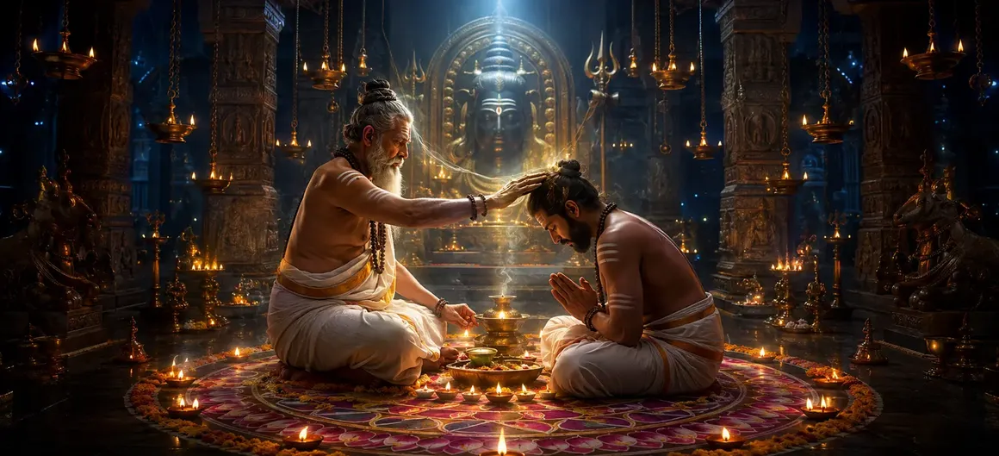

Special Consecration
The fifty-fifth chapter of the Vayaviya Samhita elaborates upon Special Consecration (Visesha Diksha), detailing advanced esoteric rituals and empowerment protocols for highly evolved spiritual practitioners.
Rishi Vayu explains how the preceptor administers elevated rites to dissolve deep remaining karmic barriers and unite the practitioner more closely with Lord Shiva.
This chapter represents a pinnacle of Shaiva esoteric initiation.
Chapter 55 Highlights
Visesha Diksha
Advanced esoteric initiation rites.
Higher Homa
Intense sacrificial fire oblations.
Deep Empowerment
Unlocking supreme subtle awareness.
Sacred Ablution
Advanced cleansing and ritual immersion.
Mantra Mastery
Transmission of profound esoteric syllables.
Path Forward
Reflecting on the mantra's place within devotion in Chapter 56.
Core Topics in This Chapter
- 01Eligibility and Criteria for Special Consecration→
- 02Advanced Altar Construction and Sacred Geometry→
- 03Esoteric Fire Rituals and Mantra Infusion→
- 04Profound Abhisheka and Subtle Cleansing→
- 05Transmission of Supreme Esoteric Mantras→
- 06Responsibilities of the Advanced Adept→
- 07Transition to Chapter 56 (Reflect on the Mantra's Place Within Devotion)→
Eligibility and Criteria for Special Consecration
Rishi Vayu explains that Special Consecration (Visesha Diksha) is reserved for practitioners who have thoroughly mastered preliminary practices and demonstrated profound inner purity.
This rigorous screening ensures the seeker is fully capable of handling intense spiritual energies.
Advanced Altar Preparation and Sacred Geometry
The ceremonial space is prepared using complex mandalas, intricate geometric patterns, and sacred substances representing cosmic forces.
Every design layout is crafted to channel supreme divine vibrations.
Esoteric Fire Rituals and Mantra Infusion
Advanced Homa rites are conducted with specialized offerings, invoking Lord Shiva in His cosmic forms while infusing the oblations with potent seed mantras.
The blazing fire consumes remaining egoic barriers.
Profound Abhisheka and Subtle Cleansing
The adept undergoes sacred immersion and ritual bathing with specially prepared medicated waters, fragrant oils, and energized liquids.
This profound cleansing purifies the deepest layers of the subtle energy body.
Transmission of Supreme Esoteric Mantras
The Guru imparts supreme esoteric mantras and secret meditative techniques, unlocking direct communion with supreme consciousness.
This transmission represents the highest tier of spiritual instruction.
Responsibilities of the Advanced Adept
Having received special consecration, the adept assumes greater responsibility for maintaining absolute mental equilibrium, ethical purity, and dedicated meditation.
Their life becomes a living reflection of divine grace.
Transition to Chapter 56 (Reflect on the Mantra's Place Within Devotion)
Having expounded Special Consecration in Chapter 55, Rishi Vayu prepares to narrate Chapter 56, 'Reflect on the Mantra's Place Within Devotion'.
This next chapter will explore the vital interplay between sacred sound and heartfelt devotion.
Key Teachings of Chapter 55
Visesha Rites
Advanced initiation protocols.
Sacred Geometry
Complex altars and cosmic mandalas.
Intense Homa
Blazing fire offerings for deep purification.
Energized Bath
Sacred immersion with healing waters.
Supreme Mantra
Transmission of highest esoteric syllables.
Devotion Prelude
Setting up devotion reflections in Chapter 56.
Spiritual Reflection
Special consecration is the supreme crucible where discipline and grace fuse, elevating the dedicated adept into direct communion with the divine splendor of Lord Shiva.
Living the Message of Chapter 55
Approach your spiritual journey with relentless dedication, knowing that profound transformation requires unwavering commitment and inner purity.
Honor the sacred knowledge imparted by spiritual preceptors through daily meditative practice.
Let your inner light shine forth as a testament to higher spiritual realization.
Key Spiritual Concepts
Special and advanced consecration for advanced adepts.
Ritual worship utilizing complex sacred geometry.
Attainment of higher spiritual authority and capacity.
Lineage-based transmission of supreme secret formulas.
Total purification of the higher mental faculties.
Attaining close proximity and union with Lord Shiva.
Chapter Summary
Vayaviya Samhita Chapter 55 details Special Consecration (Visesha Diksha), outlining eligibility criteria, advanced altar preparation, esoteric fire oblations, profound ritual bathing, and the transmission of supreme mantras. This powerful initiation paves the way for Chapter 56, 'Reflect on the mantra's place within devotion'.
Frequently Asked Questions
1. What is the primary focus of Vayaviya Samhita Chapter 55?
Chapter 55 focuses on Special Consecration (Visesha Diksha), detailing advanced esoteric rituals and empowerment for highly evolved spiritual seekers.
2. Who is eligible for special consecration?
Practitioners who have successfully fulfilled preliminary vows and demonstrated advanced spiritual stability are eligible for special consecration.
3. Who expounds these special consecration rites?
Rishi Vayu details the intricate and elevated procedures of special consecration to the assembled sages.
4. What is the next chapter for navigation after Chapter 55?
The next chapter for navigation is titled 'Reflect on the mantra's place within devotion'.
“Through special consecration, the purified adept transcends ordinary boundaries, receiving the ultimate transmission of divine wisdom and resting securely in supreme Shiva-consciousness.”
Continue Through Vayaviya Samhita
Chapter 55 concludes Special Consecration. Continue to Reflect on the mantra's place within devotion.